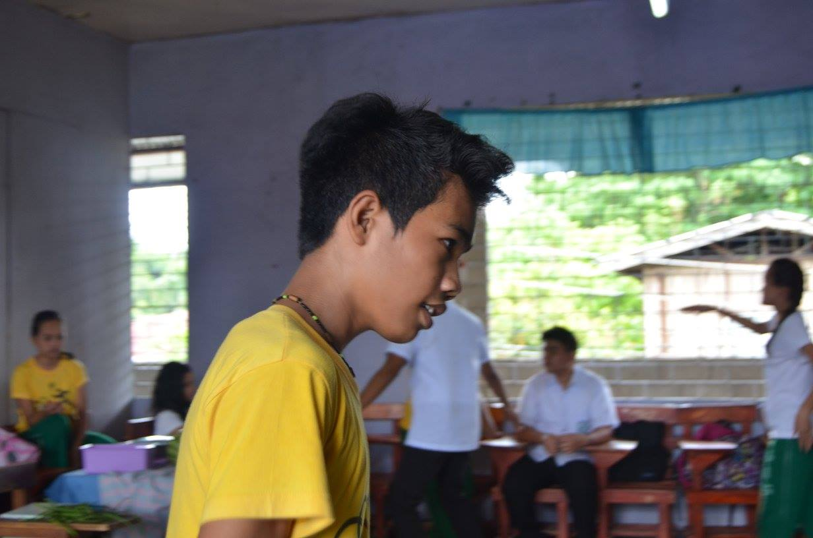
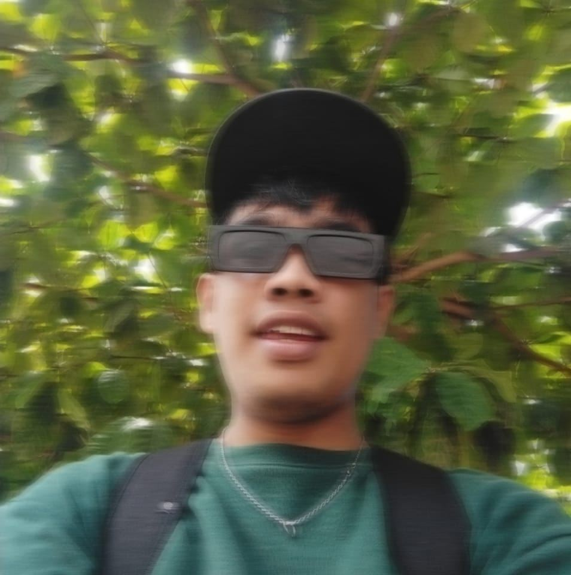

My name is Mark CJ, and I am currently pursuing a Bachelor of Science in Information Technology at University Saint Michael College of Carag. I’ve always had a passion for technology ever since I was a kid. I remember being fascinated by how computers worked and spending hours tinkering with software and hardware. This curiosity led me to choose a career path in IT, where I could combine my love for problem-solving and innovation.
My Life Story

Childhood
"I was born and raised in my home, where my early years were filled with curiosity and adventure. Growing up in a close-knit neighborhood, I spent most of my childhood playing outside with my friends, exploring the woods behind our house, and riding bikes until sunset. I was always the one asking questions, trying to figure out how things worked, whether it was a toy, a gadget, or even the old computer in the living room.
My family played a big role in shaping who I am today. My parents encouraged me to follow my interests, and they always supported my love for learning. I remember my dad teaching me the basics of using a computer, which sparked my interest in technology at an early age.
School was a mix of excitement and challenges, but I always had a strong curiosity for subjects like math and science, which eventually led me to pursue a career in Information Technology. Looking back, those years were full of small moments of discovery that laid the foundation for where I am today."
Teenage
"My teenage years were a time of growth and self-discovery. During high school, I began to develop a stronger sense of who I was and what I wanted to pursue in life. I was always a bit of a tech geek, spending hours learning about computers and experimenting with coding in my spare time. It wasn’t uncommon for me to stay up late, figuring out how to troubleshoot issues or create simple programs, while my friends were out doing other things.
School wasn’t always easy, but I found my passion in subjects like computer science and mathematics. I joined a few clubs, including the tech club, where I met like-minded people who shared my interest in technology. We’d often work on projects together, and I began to realize how much I enjoyed collaborating and learning from others.
During these years, I also developed a love for gaming, which became a big part of my life, not just as a hobby but as a way to unwind after a long day. It was also around this time that I started thinking seriously about a future in IT, deciding that I wanted to turn my passion for technology into a career."

Adulthood
"As I transitioned into adulthood, life began to take on a whole new level of responsibility and opportunity. After graduating high school, I decided to pursue a degree in Information Technology, something I had been passionate about for years. College was both challenging and exciting—balancing studies, personal growth, and discovering new interests. I made lasting friendships, tackled tough coursework, and started to focus on building the skills I’d need for a career in IT.
During this time, I also began taking on part-time work to gain experience, from freelance coding gigs to internships with tech companies. These experiences not only helped me refine my skills but also taught me the importance of networking and finding mentors.
In my personal life, I learned the value of work-life balance. I still made time for hobbies, like gaming and exploring the latest tech trends, but I also started focusing on long-term goals, including career growth and personal development. As I look forward to the future, I’m excited about the journey ahead—working in the IT field, continuing to learn, and striving for a fulfilling life, both professionally and personally."